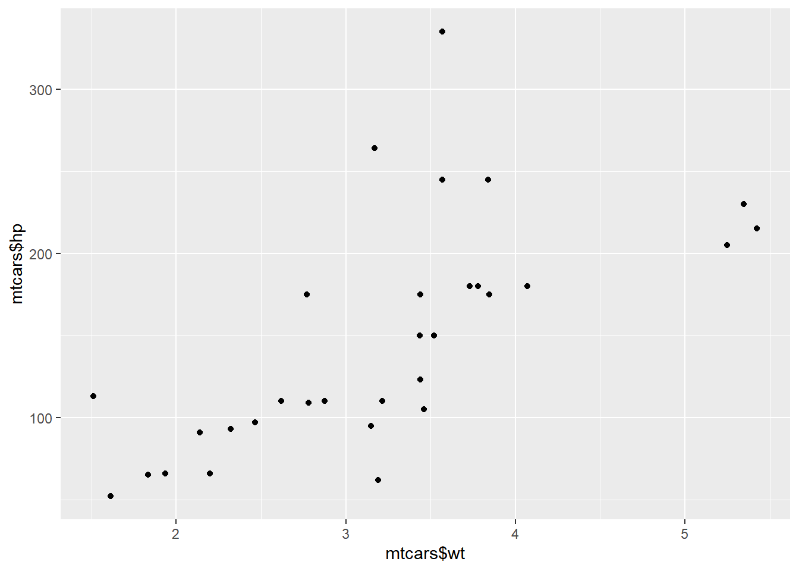

Chapter 2 Intermediate R
2.1 Conditionals and Control Flow
2.1.1 Relational operators
Equality, Greater and less than
Remember that for string comparison, R determines the greater than relationship based on alphabetical order. Also, keep in mind that TRUE is treated as 1 for arithmetic, and FALSE is treated as 0. Therefore, FALSE < TRUE is TRUE.
#Alphabetical Order!字母順序排越後面越大
"Hello" > "Goodbye"## [1] TRUE# Comparison of character strings
"useR" == "user"## [1] FALSE# Comparison of character strings
"raining" <= "raining dogs"## [1] TRUE# Comparison of logicals
TRUE == FALSE## [1] FALSE# Comparison of numerics
-6 * 14 != 17 - 101## [1] FALSE# Compare a logical with a numeric
TRUE == 1## [1] TRUECompare vectors
The sample code in the editor initializes the vectors linkedin and facebook. Each of the vectors contains the number of profile views your LinkedIn and Facebook profiles had over the last seven days.
# The linkedin and facebook vectors have already been created for you
linkedin <- c(16, 9, 13, 5, 2, 17, 14)
facebook <- c(17, 7, 5, 16, 8, 13, 14)
# Popular days
linkedin > 15## [1] TRUE FALSE FALSE FALSE FALSE TRUE FALSE# Quiet days
linkedin <= 5## [1] FALSE FALSE FALSE TRUE TRUE FALSE FALSE# LinkedIn more popular than Facebook
linkedin > facebook## [1] FALSE TRUE TRUE FALSE FALSE TRUE FALSECompare matrices
Matrices and relational operators also work together.
# The social data has been created for you
views <- matrix(c(linkedin, facebook), nrow = 2, byrow = TRUE); views## [,1] [,2] [,3] [,4] [,5] [,6] [,7]
## [1,] 16 9 13 5 2 17 14
## [2,] 17 7 5 16 8 13 14# When does views equal 13?
views == 13## [,1] [,2] [,3] [,4] [,5] [,6] [,7]
## [1,] FALSE FALSE TRUE FALSE FALSE FALSE FALSE
## [2,] FALSE FALSE FALSE FALSE FALSE TRUE FALSE# When is views less than or equal to 14?
views <= 14## [,1] [,2] [,3] [,4] [,5] [,6] [,7]
## [1,] FALSE TRUE TRUE TRUE TRUE FALSE TRUE
## [2,] FALSE TRUE TRUE FALSE TRUE TRUE TRUE& and |
Watch out: 3 < x < 7 to check if x is between 3 and 7 will not work; you’ll need 3 < x & x < 7 for that.
linkedin## [1] 16 9 13 5 2 17 14# The last value of the linkedin vector
last <- tail(linkedin, 1); last## [1] 14# The last two values of the linkedin vector
last2 <- tail(linkedin, 2); last2## [1] 17 14# Is last under 5 or above 10?
last < 5 | last > 10## [1] TRUE# Is last between 15 (exclusive) and 20 (inclusive)?
last > 15 & last <= 20## [1] FALSE“&” vs “&&”, “|” vs “||”
“&&” and “||” will only return the first value.
# Output True only
c(TRUE, TRUE, FALSE) && c(TRUE, FALSE, FALSE)
# Output True only
c(TRUE, TRUE, FALSE) || c(TRUE, FALSE, FALSE)Compare with vectors and matrices
# linkedin exceeds 10 but facebook below 10
linkedin > 10 & facebook < 10## [1] FALSE FALSE TRUE FALSE FALSE FALSE FALSE# When were one or both visited at least 12 times?
linkedin >= 12 | facebook >= 12## [1] TRUE FALSE TRUE TRUE FALSE TRUE TRUE# When is views between 11 (exclusive) and 14 (inclusive)?
view_true <- views > 11 & views <= 14; view_true## [,1] [,2] [,3] [,4] [,5] [,6] [,7]
## [1,] FALSE FALSE TRUE FALSE FALSE FALSE TRUE
## [2,] FALSE FALSE FALSE FALSE FALSE TRUE TRUE# Count the number of TRUEs in view_true
sum(view_true)## [1] 42.1.2 Conditional statements
The if statement
syntax:
if (condition) {
expr
}# Variables related to your last day of recordings
medium <- "LinkedIn"
num_views <- 14
# Examine the if statement for medium
if (medium == "LinkedIn") {
print("Showing LinkedIn information")
}## [1] "Showing LinkedIn information"# Write the if statement for num_views
if (num_views > 15) {
print("You are popular!")
}The else statement
You can only use an else statement in combination with an if statement. The else statement does not require a condition; its corresponding code is simply run if all of the preceding conditions in the control structure are FALSE.
It’s important that the else keyword comes on the same line as the closing bracket of the if part!
syntax:
if (condition) {
expr1
} else {
expr2
}# Control structure for num_views
if (num_views > 15) {
print("You're popular!")
} else {
print("Try to be more visible!")
}## [1] "Try to be more visible!"The else if statement
The else if statement allows you to further customize your control structure. You can add as many else if statements as you like. Keep in mind that R ignores the remainder of the control structure once a condition has been found that is TRUE and the corresponding expressions have been executed.
Again, It’s important that the else if keywords comes on the same line as the closing bracket of the previous part of the control construct!
if (condition1) {
expr1
} else if (condition2) {
expr2
} else if (condition3) {
expr3
} else {
expr4
}“Your number of views is average” is printed if num_views is between 15 (inclusive) and 10 (exclusive).
# Control structure for num_views
if (num_views > 15) {
print("You're popular!")
} else if (num_views <= 15 & num_views > 10) {
print("Your number of views is average")
} else {
print("Try to be more visible!")
}## [1] "Your number of views is average"You can even put in another set of conditional statements. Check the outputs of num variable if it was 6, 4, 100 or 2500.
for (num in c(6, 4, 100, 2500)){
number <- num
if (number < 10){
if (number < 5){
result <- "extra small"
} else {
result <- "small"
}
} else if (number < 100) {
result <- "medium"
} else {
result <- "large"
}
print(paste(number, "is", result))
}## [1] "6 is small"
## [1] "4 is extra small"
## [1] "100 is large"
## [1] "2500 is large"Bring together.
# Variables related to your last day of recordings
li <- 15
fb <- 9
# Code the control-flow construct
if (li >= 15 & fb >= 15) {
sms <- 2 * (li + fb)
} else if (li < 10 & fb < 10) {
sms <- 0.5 * (li + fb)
} else {
sms <- li + fb
}
# Print the resulting sms to the console
sms## [1] 242.2 Loops
2.2.1 While loop
Remember that the condition part of this recipe should become FALSE at some point during the execution. Otherwise, the while loop will go on indefinitely.
If your session expires when you run your code, check the body of your while loop carefully.
Syntax:
while (condition) {
expr
}# Initialize the speed variable
speed <- 64
# Code the while loop
while (speed > 30) {
print(paste("Slow down!", speed))
speed <- speed - 7
}## [1] "Slow down! 64"
## [1] "Slow down! 57"
## [1] "Slow down! 50"
## [1] "Slow down! 43"
## [1] "Slow down! 36"# Print out the speed variable
speed## [1] 29Throw in more conditionals.
# Initialize the speed variable
speed <- 64
# Extend/adapt the while loop
while (speed > 30) {
print(paste("Your speed is",speed))
if (speed > 48 ) {
print("Slow down big time! Minus 11")
speed <- speed - 11
} else {
print("Slow down! Minus 6")
speed <- speed - 6
}
}## [1] "Your speed is 64"
## [1] "Slow down big time! Minus 11"
## [1] "Your speed is 53"
## [1] "Slow down big time! Minus 11"
## [1] "Your speed is 42"
## [1] "Slow down! Minus 6"
## [1] "Your speed is 36"
## [1] "Slow down! Minus 6"Break the while loop
Remember that the break statement is a control statement. When R encounters it, the while loop is abandoned completely.
Adapt the while loop such that it is abandoned when the speed of the vehicle is greater than 80.
# Initialize the speed variable
speed <- 88
while (speed > 30) {
print(paste("Your speed is", speed))
# Break the while loop when speed exceeds 80
if (speed > 80 ) {
break
}
if (speed > 48) {
print("Slow down big time!")
speed <- speed - 11
} else {
print("Slow down!")
speed <- speed - 6
}
}## [1] "Your speed is 88"Build a while loop from scratch.
Prints out the triple of i, so 3 * i, at each run. Is abandoned with a break if the triple of i is divisible by 8, but still prints out this triple before breaking.
# Initialize i as 1
i <- 1
# Code the while loop
while (i <= 10) {
print(3 * i)
if (3 * i %% 8 == 0) {
break
}
i <- i + 1
}## [1] 3
## [1] 6
## [1] 9
## [1] 12
## [1] 15
## [1] 18
## [1] 21
## [1] 242.2.2 For loop
Syntax:
for (var in seq) {
expr
}Loop over a vector
Loop version 1: Concise, easy to read, but no access to looping index.
# The linkedin vector has already been defined for you
linkedin## [1] 16 9 13 5 2 17 14# Loop version 1
for (val in linkedin) {
print(val)
}## [1] 16
## [1] 9
## [1] 13
## [1] 5
## [1] 2
## [1] 17
## [1] 14Loop version 2: Harder to read and write, but more versatile.
# Loop version 2
for (index2 in 1:length(linkedin)) {
print(linkedin[index2])
}## [1] 16
## [1] 9
## [1] 13
## [1] 5
## [1] 2
## [1] 17
## [1] 14Loop over a list
Looping over a list is just as easy and convenient as looping over a vector.
Notice that you need double square brackets - [[ ]] - to select the list elements in loop version 2.
primes_list <- list(2, 3, 5, 7, 11, 13)
# loop version 2
for (i in 1:length(primes_list)) {
print(primes_list[[i]])
}# The nyc list is already specified
nyc <- list(pop = 8405837,
boroughs = c("Manhattan", "Bronx", "Brooklyn", "Queens", "Staten Island"),
capital = FALSE)
# Loop version 1
for (nyc_val in nyc) {
print(nyc_val)
}## [1] 8405837
## [1] "Manhattan" "Bronx" "Brooklyn" "Queens"
## [5] "Staten Island"
## [1] FALSE# Loop version 2
for (nyc_ind in 1:length(nyc)) {
print(nyc[[nyc_ind]])
}## [1] 8405837
## [1] "Manhattan" "Bronx" "Brooklyn" "Queens"
## [5] "Staten Island"
## [1] FALSELoop over a matrix: nested loop
There’s a matrix ttt, that represents the status of a tic-tac-toe game. It contains the values “X”, “O” and “NA”. On row 1 and column 1, there’s “O”, while on row 3 and column 2 there’s “NA”.
# The tic-tac-toe matrix
ttt <- matrix(c("O", NA, "X", NA, "O", "O", "X", NA, "X"),
byrow = T, nrow = 3); ttt## [,1] [,2] [,3]
## [1,] "O" NA "X"
## [2,] NA "O" "O"
## [3,] "X" NA "X"To solve this exercise, you’ll need a for loop inside a for loop, often called a nested loop.
for (var1 in seq1) {
for (var2 in seq2) {
expr
}
}# define the double for loop
for (r in 1:nrow(ttt)) {
for (c in 1:ncol(ttt)) {
print(paste("On row", r, "and column", c, "the board contains", ttt[r, c]))
}
}## [1] "On row 1 and column 1 the board contains O"
## [1] "On row 1 and column 2 the board contains NA"
## [1] "On row 1 and column 3 the board contains X"
## [1] "On row 2 and column 1 the board contains NA"
## [1] "On row 2 and column 2 the board contains O"
## [1] "On row 2 and column 3 the board contains O"
## [1] "On row 3 and column 1 the board contains X"
## [1] "On row 3 and column 2 the board contains NA"
## [1] "On row 3 and column 3 the board contains X"Mix it up with control flow
- if else: linkedin views exceed 10 or not.
# Code the for loop with conditionals
for (li in linkedin) {
if (li > 10) {
print("You're popular!")
} else {
print("Be more visible!")
}
print(li)
}## [1] "You're popular!"
## [1] 16
## [1] "Be more visible!"
## [1] 9
## [1] "You're popular!"
## [1] 13
## [1] "Be more visible!"
## [1] 5
## [1] "Be more visible!"
## [1] 2
## [1] "You're popular!"
## [1] 17
## [1] "You're popular!"
## [1] 14break: The
breakstatement abandons the active loop: the remaining code in the loop is skipped and the loop is not iterated over anymore.next: The
nextstatement skips the remainder of the code in the loop, but continues the iteration.
If the vector element’s value exceeds 16, print out “This is ridiculous, I’m outta here!” and have R abandon the for loop (break). If the value is lower than 5, print out “This is too embarrassing!” and fast-forward to the next iteration (next).
# Adapt/extend the for loop
for (li in linkedin) {
if (li > 10) {
print("You're popular!")
} else {
print("Be more visible!")
}
# Add if statement with break
if (li > 16) {
print("This is ridiculous, I'm outta here!")
break
}
# Add if statement with next
if (li < 5) {
print("This is too embarrassing!")
next
}
print(li)
}## [1] "You're popular!"
## [1] 16
## [1] "Be more visible!"
## [1] 9
## [1] "You're popular!"
## [1] 13
## [1] "Be more visible!"
## [1] 5
## [1] "Be more visible!"
## [1] "This is too embarrassing!"
## [1] "You're popular!"
## [1] "This is ridiculous, I'm outta here!"2.2.3 Bring it all together
The rquote variable has been split up into a vector that contains separate letters and has been stored in a vector chars with the strsplit() function.
Write code that counts the number of r’s that come before the first u in rquote.
# Pre-defined variables
rquote <- "r's internals are irrefutably intriguing"
chars <- strsplit(rquote, split = "")[[1]]; chars## [1] "r" "'" "s" " " "i" "n" "t" "e" "r" "n" "a" "l" "s" " " "a" "r" "e"
## [18] " " "i" "r" "r" "e" "f" "u" "t" "a" "b" "l" "y" " " "i" "n" "t" "r"
## [35] "i" "g" "u" "i" "n" "g"# Initialize rcount
rcount <- 0
# Finish the for loop
for (char in chars) {
if (char == "r") {
rcount <- rcount + 1
} else if (char == "u") {
break
} else {
next
}
}
# Print out rcount
rcount## [1] 52.3 Function
2.3.1 Introduction to function
Function documentation
All the relevant details such as a description, usage, and arguments can be found in the documentation. To consult the documentation on the function, for example, you can use one of following R commands:
help(sample)
?sampleA quick hack to see the arguments of the function is the args() function.
args(sample)## function (x, size, replace = FALSE, prob = NULL)
## NULLUse a function
The ‘Default S3 method’ of mean() function is:
mean(x, trim = 0, na.rm = FALSE, ...)x is required; if you do not specify it, R will throw an error. trim and na.rm are optional arguments: they have a default value which is used if the arguments are not explicitly specified.
The ... is called the ellipsis. It is a way for R to pass arguments along without the function having to name them explicitly.
# Calculate the mean of the sum
avg_sum <- mean(linkedin + facebook); avg_sum## [1] 22.3# Calculate the trimmed mean of the sum
avg_sum_trimmed <- mean(linkedin + facebook, trim = 0.2); avg_sum_trimmed## [1] 22.6Let’s see what happens if your vectors linkedin and facebook contain missing values (NA).
# The linkedin and facebook vectors have already been created for you
linkedin <- c(16, 9, 13, 5, NA, 17, 14)
facebook <- c(17, NA, 5, 16, 8, 13, 14)
# Basic average of linkedin
mean(linkedin) ## [1] NA# Advanced average of linkedin: remove missing values
mean(linkedin, na.rm = TRUE)## [1] 12.32.3.2 Writing functions
Syntax:
my_fun <- function(arg1, arg2) {
body
}# Create a function pow_two(): it takes one argument and returns that number squared (that number times itself).
pow_two <- function(a) {
a ^ 2
}
# Use the function
pow_two(12)## [1] 144# Next, create a function sum_abs(), that takes two arguments and returns the sum of the absolute values of both arguments.
sum_abs <- function(b, c) {
abs(b) + abs(c)
}
# Use the function
sum_abs(-2, 3)## [1] 5Function without input
There are situations in which your function does not require an input.
For example:
throw_die <- function() {
number <- sample(1:6, size = 1)
number
}
throw_die()## [1] 5# Define the function hello()
hello <- function() {
print("Hi there!")
return(TRUE)
}
hello()## [1] "Hi there!"## [1] TRUEFunction with default argument
You can define default argument values in your own R functions as well.
Syntax:
my_fun <- function(arg1, arg2 = val2) {
body
}# Finish the pow_two() function
pow_two <- function(x, print_info = T) {
y <- x ^ 2
if (print_info == T) {
print(paste(x, "to the power two equals", y))
}
return(y)
}
pow_two(2)## [1] "2 to the power two equals 4"## [1] 4pow_two(3, print_info = F)## [1] 9R passes arguments by value
If R were to pass a to triple() by reference, the override of the x inside the function would ripple through to the variable a, outside the function.
However, R passes by value, so the R objects you pass to a function can never change unless you do an explicit assignment. a remains equal to 5, even after calling triple(a).
triple <- function(x) {
x <- 3*x
x
}
a <- 5
triple(a)## [1] 15a## [1] 5Function with control flow
It’s perfectly possible to add control-flow constructs, loops and even other functions to your function body.
linkedin <- c(16, 9, 13, 5, 2, 17, 14)
facebook <- c(17, 7, 5, 16, 8, 13, 14)
# Define the interpret function
interpret <- function(num_views) {
if (num_views > 15) {
print("You're popular!")
return(num_views)
} else {
print("Try to be more visible!")
return(0)
}
}
# Call the interpret function twice
interpret(linkedin[1])## [1] "You're popular!"## [1] 16interpret(facebook[2])## [1] "Try to be more visible!"## [1] 0Function in function.
# Define the interpret_all() function
# views: vector with data to interpret
# return_sum: return total number of views on popular days?
interpret_all <- function(views, return_sum = T) {
count <- 0
for (v in views) {
count <- count + interpret(v)
}
if (return_sum == T) {
return(count)
} else {
return(NULL)
}
}
# Call the interpret_all() function on both linkedin and facebook
interpret_all(linkedin)## [1] "You're popular!"
## [1] "Try to be more visible!"
## [1] "Try to be more visible!"
## [1] "Try to be more visible!"
## [1] "Try to be more visible!"
## [1] "You're popular!"
## [1] "Try to be more visible!"## [1] 33interpret_all(facebook, return_sum = F)## [1] "You're popular!"
## [1] "Try to be more visible!"
## [1] "Try to be more visible!"
## [1] "You're popular!"
## [1] "Try to be more visible!"
## [1] "Try to be more visible!"
## [1] "Try to be more visible!"## NULL2.3.3 Packages
Install packages:
install.packages()Load packages:
library(),require()Load package = attach package to search list
The library() and require() functions are not very picky when it comes down to argument types. Both syntax below work perfectly fine for loading a package.
# Chunk 1
library(data.table)
require(rjson)
# Chunk 2
library("data.table")
require(rjson)# Check out the currently attached packages
search()## [1] ".GlobalEnv" "package:foreign"
## [3] "package:haven" "package:jsonlite"
## [5] "package:httr" "package:DBI"
## [7] "package:xgboost" "package:ranger"
## [9] "package:vtreat" "package:WVPlots"
## [11] "package:wrapr" "package:randomForest"
## [13] "package:rpart.plot" "package:rpart"
## [15] "package:pROC" "package:naivebayes"
## [17] "package:class" "package:naniar"
## [19] "package:agricolae" "package:sampling"
## [21] "package:simputation" "package:pwr"
## [23] "package:infer" "package:yardstick"
## [25] "package:plot3D" "package:ggfortify"
## [27] "package:fstcore" "package:fst"
## [29] "package:openintro" "package:usdata"
## [31] "package:cherryblossom" "package:airports"
## [33] "package:mgcv" "package:nlme"
## [35] "package:magrittr" "package:zeallot"
## [37] "package:broom" "package:assertive.base"
## [39] "package:assert" "package:fasttime"
## [41] "package:microbenchmark" "package:ggridges"
## [43] "package:anytime" "package:reclin2"
## [45] "package:fuzzyjoin" "package:stringdist"
## [47] "package:visdat" "package:XLConnect"
## [49] "package:readxl" "package:data.table"
## [51] "package:lattice" "package:zoo"
## [53] "package:ggthemes" "package:RColorBrewer"
## [55] "package:babynames" "package:lubridate"
## [57] "package:forcats" "package:stringr"
## [59] "package:purrr" "package:readr"
## [61] "package:tidyr" "package:tibble"
## [63] "package:tidyverse" "package:dplyr"
## [65] "package:gapminder" "package:ggplot2"
## [67] "tools:rstudio" "package:stats"
## [69] "package:graphics" "package:grDevices"
## [71] "package:utils" "package:datasets"
## [73] "package:methods" "Autoloads"
## [75] "package:base"# Load the ggplot2 package
library(ggplot2)
# Retry the qplot() function
qplot(mtcars$wt, mtcars$hp)
# Check out the currently attached packages again
search()## [1] ".GlobalEnv" "package:foreign"
## [3] "package:haven" "package:jsonlite"
## [5] "package:httr" "package:DBI"
## [7] "package:xgboost" "package:ranger"
## [9] "package:vtreat" "package:WVPlots"
## [11] "package:wrapr" "package:randomForest"
## [13] "package:rpart.plot" "package:rpart"
## [15] "package:pROC" "package:naivebayes"
## [17] "package:class" "package:naniar"
## [19] "package:agricolae" "package:sampling"
## [21] "package:simputation" "package:pwr"
## [23] "package:infer" "package:yardstick"
## [25] "package:plot3D" "package:ggfortify"
## [27] "package:fstcore" "package:fst"
## [29] "package:openintro" "package:usdata"
## [31] "package:cherryblossom" "package:airports"
## [33] "package:mgcv" "package:nlme"
## [35] "package:magrittr" "package:zeallot"
## [37] "package:broom" "package:assertive.base"
## [39] "package:assert" "package:fasttime"
## [41] "package:microbenchmark" "package:ggridges"
## [43] "package:anytime" "package:reclin2"
## [45] "package:fuzzyjoin" "package:stringdist"
## [47] "package:visdat" "package:XLConnect"
## [49] "package:readxl" "package:data.table"
## [51] "package:lattice" "package:zoo"
## [53] "package:ggthemes" "package:RColorBrewer"
## [55] "package:babynames" "package:lubridate"
## [57] "package:forcats" "package:stringr"
## [59] "package:purrr" "package:readr"
## [61] "package:tidyr" "package:tibble"
## [63] "package:tidyverse" "package:dplyr"
## [65] "package:gapminder" "package:ggplot2"
## [67] "tools:rstudio" "package:stats"
## [69] "package:graphics" "package:grDevices"
## [71] "package:utils" "package:datasets"
## [73] "package:methods" "Autoloads"
## [75] "package:base"2.4 The apply family
2.4.1 lapply
To put it generally, lapply takes a vector or list X, and applies the function FUN to each of its members. If FUN requires additional arguments, you pass them after you’ve specified X and FUN (...). The output of lapply() is a list, the same length as X, where each element is the result of applying FUN on the corresponding element of X.
lapply(X, FUN, ...)Compare with for loop
cities <- c("New York", "Paris", "London", "Tokyo", "Rio de Janeiro", "Cape Town")
# for loop
num_chars <- c()
for(i in 1:length(cities)) {
num_chars[i] <- nchar(cities[i])
}
num_chars## [1] 8 5 6 5 14 9# lapply
unlist(lapply(cities, nchar))## [1] 8 5 6 5 14 9With a built-in R function
# The vector pioneers has already been created for you
pioneers <- c("GAUSS:1777", "BAYES:1702", "PASCAL:1623", "PEARSON:1857")
# Split names from birth year
split_math <- strsplit(pioneers, split = ":"); split_math## [[1]]
## [1] "GAUSS" "1777"
##
## [[2]]
## [1] "BAYES" "1702"
##
## [[3]]
## [1] "PASCAL" "1623"
##
## [[4]]
## [1] "PEARSON" "1857"# Convert to lowercase strings: split_low
split_low <- lapply(split_math, tolower)
# Take a look at the structure of split_low
str(split_low)## List of 4
## $ : chr [1:2] "gauss" "1777"
## $ : chr [1:2] "bayes" "1702"
## $ : chr [1:2] "pascal" "1623"
## $ : chr [1:2] "pearson" "1857"With your own function
# Write function select_first()
select_first <- function(x) {
x[1]
}
# Apply select_first() over split_low: names
names <- lapply(split_low, select_first)
print(unlist(names))## [1] "gauss" "bayes" "pascal" "pearson"# Write function select_second()
select_second <- function(x) {
x[2]
}
# Apply select_second() over split_low: years
years <- lapply(split_low, select_second)
print(unlist(years))## [1] "1777" "1702" "1623" "1857"With anonymous functions
To not give the function a name. This is called an anonymous function.
# Named function
triple <- function(x) { 3 * x }
# Anonymous function with same implementation
function(x) { 3 * x }# Transform: use anonymous function inside lapply
names_an <- unlist(lapply(split_low, function(x) {x[1]})); names_an## [1] "gauss" "bayes" "pascal" "pearson"# Transform: use anonymous function inside lapply
years_an <- unlist(lapply(split_low, function(x) {x[2]})); years_an## [1] "1777" "1702" "1623" "1857"With additional arguments
In select_el(), it takes a vector as its first argument, and an index as its second argument. It returns the vector’s element at the specified index.
# Generic select function
select_el <- function(x, index) {
x[index]
}
# Use lapply() twice on split_low: names and years
names_ad <- unlist(lapply(split_low, select_el, index = 1)); names_ad## [1] "gauss" "bayes" "pascal" "pearson"years_ad <- unlist(lapply(split_low, select_el, index = 2)); years_ad## [1] "1777" "1702" "1623" "1857"2.4.2 sapply
The first argument of sapply() is the list or vector X over which you want to apply a function, FUN. And it will return a vector (lapply return list). Potential additional arguments to this function are specified afterwards (...):
sapply(X, FUN, ...)In the next couple of exercises, you’ll be working with the variable temp, that contains temperature measurements for 7 days. temp is a list of length 7, where each element is a vector of length 5, representing 5 measurements on a given day.
temp <- list(c(3, 7, 9, 6, -1),
c(6, 9, 12, 13, 5),
c(4, 8, 3, -1, -3),
c(1, 4, 7, 2, -2),
c(5, 7, 9, 4, 2),
c(-3, 5, 8, 9, 4),
c(3, 6, 9, 4, 1))
str(temp)## List of 7
## $ : num [1:5] 3 7 9 6 -1
## $ : num [1:5] 6 9 12 13 5
## $ : num [1:5] 4 8 3 -1 -3
## $ : num [1:5] 1 4 7 2 -2
## $ : num [1:5] 5 7 9 4 2
## $ : num [1:5] -3 5 8 9 4
## $ : num [1:5] 3 6 9 4 1Compare with lapply
The former returns a list, while the latter returns a vector that is a simplified version of this list.
# Use lapply() to find each day's minimum temperature
lapply(temp, min)## [[1]]
## [1] -1
##
## [[2]]
## [1] 5
##
## [[3]]
## [1] -3
##
## [[4]]
## [1] -2
##
## [[5]]
## [1] 2
##
## [[6]]
## [1] -3
##
## [[7]]
## [1] 1# Use sapply() to find each day's minimum temperature
sapply(temp, min)## [1] -1 5 -3 -2 2 -3 1With your own function
# Finish function definition of extremes_avg
extremes_avg <- function(x) {
( min(x) + max(x)) / 2
}
# Apply extremes_avg() over temp using sapply()
sapply(temp, extremes_avg)## [1] 4.0 9.0 2.5 2.5 5.5 3.0 5.0# Apply extremes_avg() over temp using lapply()
lapply(temp, extremes_avg)## [[1]]
## [1] 4
##
## [[2]]
## [1] 9
##
## [[3]]
## [1] 2.5
##
## [[4]]
## [1] 2.5
##
## [[5]]
## [1] 5.5
##
## [[6]]
## [1] 3
##
## [[7]]
## [1] 5With function returning vector
What if the function you’re applying over a list or a vector returns a vector of length greater than 1?
# Create a function that returns min and max of a vector: extremes
extremes <- function(x) {
c(min = min(x), max = max(x))
}
# Apply extremes() over temp with sapply()
sapply(temp, extremes)## [,1] [,2] [,3] [,4] [,5] [,6] [,7]
## min -1 5 -3 -2 2 -3 1
## max 9 13 8 7 9 9 9# Apply extremes() over temp with lapply()
lapply(temp, extremes)## [[1]]
## min max
## -1 9
##
## [[2]]
## min max
## 5 13
##
## [[3]]
## min max
## -3 8
##
## [[4]]
## min max
## -2 7
##
## [[5]]
## min max
## 2 9
##
## [[6]]
## min max
## -3 9
##
## [[7]]
## min max
## 1 9Do not output vector names, argument: USE.NAMES
cities## [1] "New York" "Paris" "London" "Tokyo"
## [5] "Rio de Janeiro" "Cape Town"unlist(lapply(cities,nchar))## [1] 8 5 6 5 14 9sapply(cities, nchar, USE.NAMES = FALSE)## [1] 8 5 6 5 14 9Can’t simplify
# Definition of below_zero()
below_zero <- function(x) {
return(x[x < 0])
}
# Apply below_zero over temp using sapply(): freezing_s
freezing_s <- sapply(temp, below_zero); freezing_s## [[1]]
## [1] -1
##
## [[2]]
## numeric(0)
##
## [[3]]
## [1] -1 -3
##
## [[4]]
## [1] -2
##
## [[5]]
## numeric(0)
##
## [[6]]
## [1] -3
##
## [[7]]
## numeric(0)# Apply below_zero over temp using lapply(): freezing_l
freezing_l <- lapply(temp, below_zero)
# Are freezing_s and freezing_l identical?
base::identical(freezing_l, freezing_s)## [1] TRUEWith functions that return NULL
sapply() does not simplify the list of NULL‘s. That’s because the ’vector-version’ of a list of NULL’s would simply be a NULL, which is no longer a vector with the same length as the input.
print_info <- function(x) {
cat("The average temperature is", mean(x), "\n")
}
# Apply print_info() over temp using sapply()
sapply(temp, print_info)## The average temperature is 4.8
## The average temperature is 9
## The average temperature is 2.2
## The average temperature is 2.4
## The average temperature is 5.4
## The average temperature is 4.6
## The average temperature is 4.6## [[1]]
## NULL
##
## [[2]]
## NULL
##
## [[3]]
## NULL
##
## [[4]]
## NULL
##
## [[5]]
## NULL
##
## [[6]]
## NULL
##
## [[7]]
## NULL# Apply print_info() over temp using lapply()
lapply(temp, print_info)## The average temperature is 4.8
## The average temperature is 9
## The average temperature is 2.2
## The average temperature is 2.4
## The average temperature is 5.4
## The average temperature is 4.6
## The average temperature is 4.6## [[1]]
## NULL
##
## [[2]]
## NULL
##
## [[3]]
## NULL
##
## [[4]]
## NULL
##
## [[5]]
## NULL
##
## [[6]]
## NULL
##
## [[7]]
## NULL2.4.3 vapply
Over the elements inside X, the function FUN is applied. The FUN.VALUE argument expects a template for the return argument of this function FUN. USE.NAMES is TRUE by default; in this case vapply() tries to generate a named array, if possible.
vapply(X, FUN, FUN.VALUE, ..., USE.NAMES = TRUE)Notice how, just as with sapply(), vapply() neatly transfers the names that you specify in the basics() function to the row names of the matrix that it returns.
# Definition of basics()
basics <- function(x) {
c(min = min(x), mean = mean(x), max = max(x))
}
# Apply basics() over temp using vapply()
vapply(temp, basics, numeric(3))## [,1] [,2] [,3] [,4] [,5] [,6] [,7]
## min -1.0 5 -3.0 -2.0 2.0 -3.0 1.0
## mean 4.8 9 2.2 2.4 5.4 4.6 4.6
## max 9.0 13 8.0 7.0 9.0 9.0 9.0There are cases where the structure of the output of the function you want to apply, FUN, does not correspond to the template you specify in FUN.VALUE. In that case, vapply() will throw an error that informs you about the misalignment between expected and actual output.
# Definition of the basics() function
basics <- function(x) {
c(min = min(x), mean = mean(x), median = median(x), max = max(x))
}
# An error should pop up. That's because vapply() still expects basics() to return a vector of length 3.
# Error in vapply(temp, basics, numeric(3)) : values must be length 3, but FUN(X[[1]]) result is length 4
vapply(temp, basics, numeric(3))vapply() can be considered a more robust version of sapply(), because you explicitly restrict the output of the function you want to apply.
# Convert to vapply() expression
vapply(temp, max, numeric(1))## [1] 9 13 8 7 9 9 9# Convert to vapply() expression
vapply(temp, function(x, y) { mean(x) > y }, y = 5, logical(1))## [1] FALSE TRUE FALSE FALSE TRUE FALSE FALSE2.5 Utilities
2.5.1 Mathematical utilities
abs(): Calculate the absolute value. (絕對值)sum(): Calculate the sum of all the values in a data structure.mean(): Calculate the arithmetic mean.round(): Round the values to 0 decimal places by default.Can change the number of digits to round to. (小數點後四捨五入)
# The errors vector has already been defined for you
errors <- c(1.9, -2.6, 4.0, -9.5, -3.4, 7.3)
# Sum of absolute rounded values of errors
sum(abs(round(errors)))## [1] 292.5.2 Data structures utilities
seq(): Generate sequences, by specifying the from, to, and by arguments.rep(): Replicate elements of vectors and lists.sort(): Sort a vector in ascending order. Works on numerics, but also on character strings and logicals.rev(): Reverse the elements in a data structures for which reversal is defined.str(): Display the structure of any R object.append(): Merge vectors or lists.is.*(): Check for the class of an R object.as.*(): Convert an R object from one class to another.unlist(): Flatten (possibly embedded) lists to produce a vector.
# The linkedin and facebook lists have already been created for you
linkedin <- list(16, 9, 13, 5, 2, 17, 14)
facebook <- list(17, 7, 5, 16, 8, 13, 14)
# Convert linkedin and facebook to a vector: li_vec and fb_vec
li_vec <- unlist(linkedin); li_vec## [1] 16 9 13 5 2 17 14fb_vec <- unlist(facebook); fb_vec## [1] 17 7 5 16 8 13 14is.vector(li_vec)## [1] TRUE# Append fb_vec to li_vec: social_vec
social_vec <- append(li_vec, fb_vec)
# Sort social_vec
sort(social_vec, decreasing = T)## [1] 17 17 16 16 14 14 13 13 9 8 7 5 5 2# Fix me
rep(seq(1, 7, by = 2), times = 3)## [1] 1 3 5 7 1 3 5 7 1 3 5 7rep(seq(1, 7, by = 2), each = 3)## [1] 1 1 1 3 3 3 5 5 5 7 7 7# Create first sequence: seq1
seq1 <- seq(1, 500, by = 3)
# Create second sequence: seq2
seq2 <- seq(1200, 900, by = -7)
# Calculate total sum of the sequences
sum(seq1, seq2)## [1] 870292.5.3 Regular Expressions
Regular expressions can be used to see whether a pattern exists inside a character string or a vector of character strings.
- Sequence of (meta)characters
- Pattern existence
- Pattern replacement
- Pattern extraction
grepl & grep
grepl(), which returns TRUE when a pattern is found in the corresponding character string.
grepl(pattern = <regex>, x = <string>)grep(), which returns a vector of indices of the character strings that contains the pattern.(can usewhich())
grep(pattern = <regex>, x = <string>)Both functions need a pattern and an x argument, where pattern is the regular expression you want to match for, and the x argument is the character vector from which matches should be sought.
# The emails vector has already been defined for you
emails <- c("john.doe@ivyleague.edu", "education@world.gov",
"dalai.lama@peace.org","invalid.edu",
"quant@bigdatacollege.edu", "cookie.monster@sesame.tv")
# Use grepl() to match for "edu"
grepl(pattern = "edu", x = emails)## [1] TRUE TRUE FALSE TRUE TRUE FALSE# Use grep() or which() to match for "edu", save result to hits
hits <- grep(pattern = "edu", x = emails); hits## [1] 1 2 4 5hits_w <- which(grepl(pattern = "edu", x = emails)); hits_w## [1] 1 2 4 5# Subset emails using hits
emails[hits]## [1] "john.doe@ivyleague.edu" "education@world.gov"
## [3] "invalid.edu" "quant@bigdatacollege.edu"regex
# Use grepl() to match for .edu addresses more robustly
grepl(pattern = ".+@{1}.*\\.edu$", x = emails)## [1] TRUE FALSE FALSE FALSE TRUE FALSE# Use grep() to match for .edu addresses more robustly, save result to hits
hits <- grep(pattern = ".+@{1}.*\\.edu$", x = emails)
# Subset emails using hits
emails[hits]## [1] "john.doe@ivyleague.edu" "quant@bigdatacollege.edu"sub & gsub
sub() and gsub() take it one step further: you can specify a replacement argument.If inside the character vector x, the regular expression patternis found, the matching element(s) will be replaced with replacement.
sub():only replaces the first match.
sub(pattern = <regex>, replacement = <str>, x = <str>)gsub():replaces all matches
gsub(pattern = <regex>, replacement = <str>, x = <str>)# Use sub() to convert the email domains to datacamp.edu
sub(pattern = "@.*\\.edu$", replacement = "@datacamp.edu", x = emails)## [1] "john.doe@datacamp.edu" "education@world.gov"
## [3] "dalai.lama@peace.org" "invalid.edu"
## [5] "quant@datacamp.edu" "cookie.monster@sesame.tv".*: any character that is matched zero or more times.\\s: Match a space. Escaping it (\\) makes it a metacharacter.[0-9]+: Match the numbers 0 to 9, at least once (+).([0-9]+): The parentheses are used to make parts of the matching string available to define the replacement. The\\1in thereplacementargument ofsub()gets set to the string that is captured by the regular expression[0-9]+.
awards <- c("Won 1 Oscar.",
"Won 1 Oscar. Another 9 wins & 24 nominations.",
"1 win and 2 nominations.",
"2 wins & 3 nominations.",
"Nominated for 2 Golden Globes. 1 more win & 2 nominations.",
"4 wins & 1 nomination.")
sub(".*\\s([0-9]+)\\snomination.*$", "\\1", awards)## [1] "Won 1 Oscar." "24" "2" "3"
## [5] "2" "1"The ([0-9]+) selects the entire number that comes before the word “nomination” in the string, and the entire match gets replaced by this number because of the \\1 that reference to the content inside the parentheses.
Another example
"A. J. Burnett"## [1] "A. J. Burnett"gsub("([A-Z])\\.\\s([A-Z])\\.", "\\1.\\2.", "A. J. Burnett")## [1] "A.J. Burnett"2.5.4 Dates & Times
Today
Sys.Date()
Sys.time()Date: dates, under hood,Dateobjects store the number of days since the 1970-01-01.POSIXct: times, under hood,POSIXctobjects store the number of seconds since the 1970-01-01.
# Get the current date: today
today <- Sys.Date(); today## [1] "2024-01-14"# See what today looks like under the hood
paste(unclass(today), "days")## [1] "19736 days"# Get the current time: now
now <- Sys.time(); now## [1] "2024-01-14 14:15:10 CST"# See what now looks like under the hood
paste(unclass(now), "seconds")## [1] "1705212910.25752 seconds"Format of dates
To create a Date object from a simple character string in R, you can use the as.Date() function. Ex: 13 January, 1982.
Symbol:
%Y: 4-digit year (1982)%y: 2-digit year (82)%m: 2-digit month (01)%d: 2-digit day of the month (13)%A: weekday (Wednesday)%a: abbreviated weekday (Wed)%B: month (January)%b: abbreviated month (Jan)
R default matches your character string to the formats "%Y-%m-%d" or "%Y/%m/%d".
You can also use format() to convert dates to character strings.
# Change to UTC timezone
Sys.timezone()## [1] "Asia/Taipei"Sys.setlocale("LC_TIME", "C")## [1] "C"# Definition of character strings representing dates
str1 <- "May 23, '96"
str2 <- "2012-03-15"
str3 <- "30/January/2006"
# Convert the strings to dates: date1, date2, date3
date1 <- as.Date(str1, format = "%b %d, '%y")
date2 <- as.Date(str2)
date3 <- as.Date(str3, "%d/%B/%Y")
# Convert dates to formatted strings
format(date1, "This is %A.")## [1] "This is Thursday."format(date2, "%d")## [1] "15"format(date3, "%b %Y")## [1] "Jan 2006"Create and format times
You can use as.POSIXct() to convert from a character string to a POSIXct object, and format() to convert from a POSIXct object to a character string. Again, you have a wide variety of symbols:
%H: hours as a decimal number (00-23)%I: hours as a decimal number (01-12)%M: minutes as a decimal number%S: seconds as a decimal number%T: shorthand notation for the typical format%H:%M:%S%p: AM/PM indicator
For a full list of conversion symbols, consult the strptime.Default format of as.POSIXct() is %Y-%m-%d %H:%M:%S.
# Definition of character strings representing times
str1 <- "May 23, '96 hours:23 minutes:01 seconds:45"
str2 <- "2012-3-12 14:23:08"
# Convert the strings to POSIXct objects: time1, time2
time1 <- as.POSIXct(str1, format = "%B %d, '%y hours:%H minutes:%M seconds:%S")
time2 <- as.POSIXct(str2, format = "%Y-%m-%d %T")
# Convert times to formatted strings
format(time1, "%M")## [1] "01"format(time2, "%I:%M %p")## [1] "02:23 PM"Calculations with Dates
Both Date and POSIXct R objects are represented by simple numerical values under the hood. This makes calculation with time and date objects very straightforward: R performs the calculations using the underlying numerical values, and then converts the result back to human-readable time information again.
You can increment and decrement Date objects, or do actual calculations.
# Create date
day1 <- as.Date("2023-09-15")
day2 <- as.Date("2023-09-17")
day3 <- as.Date("2023-09-22")
day4 <- as.Date("2023-09-28")
day5 <- as.Date("2023-10-03")
# Difference between last and first pizza day
day5 - day1## Time difference of 18 days# Create vector pizza
pizza <- c(day1, day2, day3, day4, day5)
pizza## [1] "2023-09-15" "2023-09-17" "2023-09-22" "2023-09-28" "2023-10-03"# Create differences between consecutive pizza days: day_diff
day_diff <- diff(pizza); day_diff## Time differences in days
## [1] 2 5 6 5# Average period between two consecutive pizza days
mean(day_diff)## Time difference of 4.5 daysCalculations with Times
Calculations using POSIXct objects are completely analogous to those using Date objects.
# Create time
login <- c(as.POSIXct("2023-09-19 10:18:04"),
as.POSIXct("2023-09-24 09:14:18"),
as.POSIXct("2023-09-24 12:21:51"),
as.POSIXct("2023-09-24 12:37:24"),
as.POSIXct("2023-09-26 21:37:55")); login## [1] "2023-09-19 10:18:04 CST" "2023-09-24 09:14:18 CST"
## [3] "2023-09-24 12:21:51 CST" "2023-09-24 12:37:24 CST"
## [5] "2023-09-26 21:37:55 CST"logout <- c(as.POSIXct("2023-09-19 10:56:29"),
as.POSIXct("2023-09-24 09:14:52"),
as.POSIXct("2023-09-24 12:35:48"),
as.POSIXct("2023-09-24 13:17:22"),
as.POSIXct("2023-09-26 22:08:47")); logout## [1] "2023-09-19 10:56:29 CST" "2023-09-24 09:14:52 CST"
## [3] "2023-09-24 12:35:48 CST" "2023-09-24 13:17:22 CST"
## [5] "2023-09-26 22:08:47 CST"# Calculate the difference between login and logout: time_online
time_online <- logout - login
# Inspect the variable time_online
time_online## Time differences in secs
## [1] 2305 34 837 2398 1852# Calculate the total time online
sum(time_online)## Time difference of 7426 secs# Calculate the average time online
mean(time_online)## Time difference of 1485 secs# Create vector
astro <- c(spring = "20-Mar-2015",
summer = "25-Jun-2015",
fall = "23-Sep-2015",
winter = "22-Dec-2015"); astro## spring summer fall winter
## "20-Mar-2015" "25-Jun-2015" "23-Sep-2015" "22-Dec-2015"meteo <- c(spring = "March 1, 15",
summer = "June 1, 15",
fall = "September 1, 15",
winter = "December 1, 15"); meteo## spring summer fall winter
## "March 1, 15" "June 1, 15" "September 1, 15" "December 1, 15"# Convert astro to vector of Date objects: astro_dates
astro_dates <- as.Date(astro, format = "%d-%b-%Y"); astro_dates## spring summer fall winter
## "2015-03-20" "2015-06-25" "2015-09-23" "2015-12-22"# Convert meteo to vector of Date objects: meteo_dates
meteo_dates <- as.Date(meteo, format = "%B %d, %y"); meteo_dates## spring summer fall winter
## "2015-03-01" "2015-06-01" "2015-09-01" "2015-12-01"# Calculate the maximum absolute difference between astro_dates and meteo_dates
max(abs(astro_dates - meteo_dates))## Time difference of 24 days